首页 / N 游戏概念
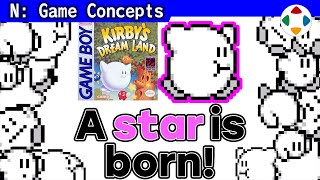
#15:17《星之卡比》（初代）
Kirby's Dream Land企划概念分类的第一集：樱井 19 岁写下企划书的导演出道作。核心是「利用敌人」的乐趣（风险与回报表里一体），化为吸入/吐出；可以飞行，是因为体力制游戏里掉坑即死太重。作品刻意面向初学者——在 FC 末期难度高涨的时代，承担起把新手带进游戏世界的角色，结果成为系列销量第一。
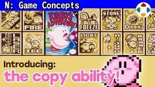
#25:56《星之卡比 梦之泉物语》
Kirby's Adventure系列第二作、首次有复制能力的卡比。HAL 申请和议、濒临破产时，公司要求在 FC 上做卡比、尽快出售。樱井判断面向初学者的概念在成熟的 FC 市场行不通，于是立下课题「同时满足初学者与高手」，想出复制能力：只用吸入吐出也能通关，熟练者能玩得更广；同时大幅提升卡比的角色魅力。
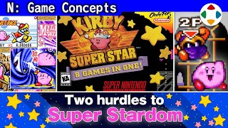
#37:39《星之卡比 超级豪华版》
Kirby Super Star1996 年 SFC 作品，两大概念：二人同时游玩与「合集（Omnibus）」。为在横版动作里实现双人，樱井把角色分为主角与配角（Helper 系统），镜头只追主角；再与复制能力结合，让敌人本身变成玩家角色。合集形式则让每段剧本短小、玩法各异，大体量也不易腻。
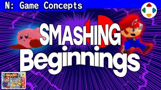
#48:31《任天堂明星大乱斗》（初代）
Super Smash Bros.N64 时代，樱井独自学 3D，提出两个企划并与岩田聪做出原型《格斗游戏龙王》。因急需尽快完成的作品而选择四人对战格斗。大乱斗不是否定格斗游戏，而是针对「连招不是博弈」：用累积伤害与击飞出界提升临场博弈，用「方向+按键」简化操作，借用任天堂人气角色解决「一开始就有一堆陌生主角」的问题。
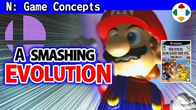
#54:18《任天堂明星大乱斗 DX》
Super Smash Bros. Melee樱井的企划通常是「有课题→解决课题」的逻辑型，但 DX 的概念非常简单：让大乱斗飞跃式强化。从 N64 极其受限的性能（每名斗士约 300 多边形、64×64 贴图）换到 NGC，斗士、舞台、画面、动作、声音、体量、手感、道具、附加内容全部升级；首次光盘开发带来流媒体管弦乐，并加入收集要素「手办」。
 #66:33
#66:33《卡比的空中骑士》
Kirby Air Ride2001 年卡比动画开播，樱井任系列统括导演，需要能配合动画的游戏阵容，判断赛车游戏比正统动作更快完成。核心设计：假设漂移好玩（风险与回报），并在刹车时蓄力、「吸一口再放开」；不往「追求顶点」收敛，而往「拓宽玩法」设计（城市试炼、清单检查器）。开发停滞一年后他回归导演、全面重做，3 个半月完成。
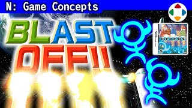
#78:33《Meteos》
Meteos离开 HAL 后，前世嘉的水口哲也委托樱井做下落式方块游戏。他自认不擅长这类游戏，但懂得游戏性产生的原理就能企划：下落方块本身就是风险，积得越多风险越高、布局好就能一举翻转。他追问「真的必须消除方块吗？」，想出「把对齐的方块当推进力豪快地发射出去」，并让每颗星球的方块、场地、发射特性、音乐全都不同。
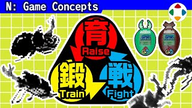
#89:18《养成！甲虫王者 虫之王》
Sodatete! Kouchuu Ouja Mushiking樱井团队最小的作品：一款 LSI 掌机养成游戏。2003 年的街机卡牌游戏《甲虫王者》以石头剪刀布对战，在日本低年级小学生中大热。应世嘉竹崎忠之托，把 LSI 养成与虫之王结合。视频大段展示 2005 年企划书；设计重点包括防止育成强弱导致对战崩坏、吃饭慢慢咀嚼等情感表现，以及远程协作开发。
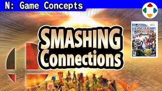
#97:33《任天堂明星大乱斗 X》
Super Smash Bros. Brawl2005 年 E3 公布 Wii 的次日，岩田社长亲自邀樱井制作 Wii 版大乱斗。两大制作概念：联机对战与能长时间游玩的单人模式「亚空的使者」。他坦言大乱斗与联机相性并不好（完全同步通信、延迟），但「课题就要做」；同时新增最终必杀、援助手办、我的音乐、第三方参战，并因 DX 对休闲层过难而放慢速度、走相对休闲路线。
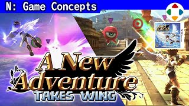
#1012:59《新·光神话 帕尔提娜之镜》
Kid Icarus: Uprising3DS 公布前，岩田社长请樱井从外部提议 3DS 规格并做一款专用游戏。DS 时代休闲路线由「触摸世代」担当，于是他反其道而行，做「骨太、丰富、让玩家满足」的作品；为发挥裸眼 3D 选择 TPS（空战为轨道射击、地面为 TPS），并像大乱斗之于格斗那样提供新的呈现。之后才选定《光神话》为题材。
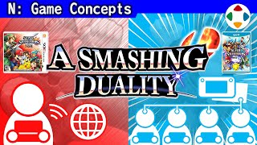
#1111:00《任天堂明星大乱斗 for 3DS / Wii U》
Super Smash Bros. for 3DS / Wii U「右手红色掌机、左手蓝色主机，选哪个？——两个都拿。」樱井选择双平台同时开发：3DS 版是首个能随身玩的大乱斗、Wii U 版有 HD 表现，目标是连接「个人持有的掌机」与「大家聚会的主机」的优点。由万代南梦宫工作室开发，加入各自独有模式、可变强度要素（自定义、Mii 斗士、amiibo），并首次由樱井以外的人设定参数、首次支持在线更新与 DLC。
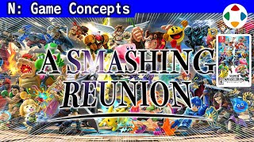
#1212:24《任天堂明星大乱斗 特别版》
Super Smash Bros. UltimateSwitch 尚未公布时就收到的委托，也成为岩田先生交给樱井的最后任务。概念非常明确：全员参战。以往每作团队与平台都完全不同、几乎全部重做；而 4 代与特别版同在 BNS、环境可沿用，「如果过去全员能参战，只有现在」。还介绍 200 页企划书、节奏调整、300 种舞台、容量减半的困境、命魂与灯火之星、DLC 与疫情下的远程开发。
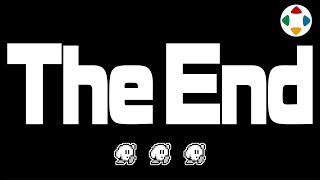
#1346:14最终回特别篇：这个频道是怎么做出来的
Masahiro Sakurai on Creating Games: Finale Special频道最终回（约 46 分钟），作为「企划概念」类介绍这个频道本身的制作：诞生于大乱斗 DLC 结束到新项目开工之间的空档；动机是用「谁都能自由访问、能留存下来」的形式回馈游戏业。他一次写完全部约 30 万字的稿子，独自用小相机录完，交给 HIKE 剪辑、8-4 翻译；公开期间白天做游戏、晚上 20 点后做频道。总费用约 9000 万日元，不变现——是为未来游戏的「捐赠」。